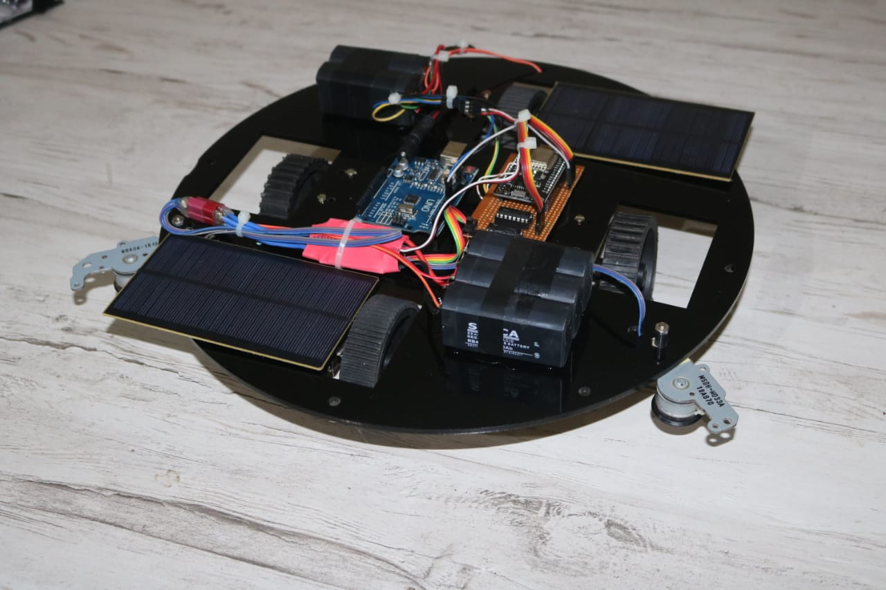

Cloud Architecture
Secure, scalable AWS foundations across VPC, IAM, EC2, RDS, S3, Lambda and EKS.
AWS CLOUD & DEVOPS ENGINEER
I design, automate and scale cloud infrastructure, Kubernetes platforms, CI/CD pipelines and AI/MLOps systems that power reliable applications.
ABOUT ME
AWS Cloud & DevOps Engineer with 4+ years of experience designing, automating, and optimizing secure, scalable cloud environments. My work spans Infrastructure as Code, Kubernetes, CI/CD, observability, GenAI platforms, and MLOps workflows.
TECHNOLOGIES I WORK WITH
CORE EXPERTISE / ROAD MAP
Secure, scalable AWS foundations across VPC, IAM, EC2, RDS, S3, Lambda and EKS.
Reusable Terraform modules, Terraform Enterprise, policy-as-code, governance and repeatable provisioning.
GitLab CI, Jenkins, Docker, ECR, ECS, Kubernetes/EKS and Helm for production delivery.
CloudWatch, Datadog, Prometheus, Grafana, ELK, Splunk and OpenTelemetry.
Bedrock, Claude/Llama, RAG, OpenSearch, SageMaker Pipelines, deployment and monitoring.
SELECTED ENGINEERING WORK

B.TECH / FINAL SEMESTERENGINEERING ORIGINS
Final-semester Mechanical Engineering project combining mechanical design, automation and solar-energy concepts in a working grass-cutter platform.
Migrated critical AWS services from legacy provisioning to governed Terraform workflows with reusable modules, GitLab integration, and audit-ready infrastructure.
Production GenAI workflows using Amazon Bedrock, Claude/Llama models and OpenSearch-backed retrieval.
Automated preprocessing, training, deployment, monitoring and experiment tracking.
04 / ENGINEERING FOUNDATION
B.Tech — Vidya Jyothi Institute of Technology
Solar grass cutter, robotics, CAD and engineering competitions.
M.S. — The Catholic University of America
AWS · Terraform · Kubernetes · CI/CD · AI Infrastructure
EARLY CREDENTIALS / WORKSHOPS
Internship Program — NSIC Technical Services Centre
IIT Hyderabad Racing / Vidyavilla Foundation
Student Convention — Tier II
Student Convention — Tier II
EXPERIENCE
Cognizant • Seattle, WA
Synopsis • India
PhaseZero.ai • India
CONTACT / LET'S BUILD
Let’s talk about DevOps, platform engineering, cloud automation, AI infrastructure, or the next system you need to scale.